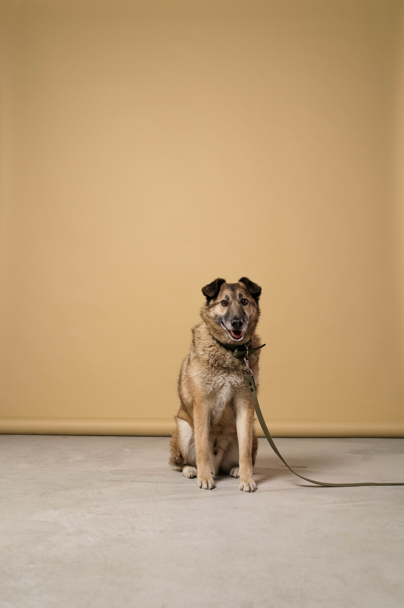
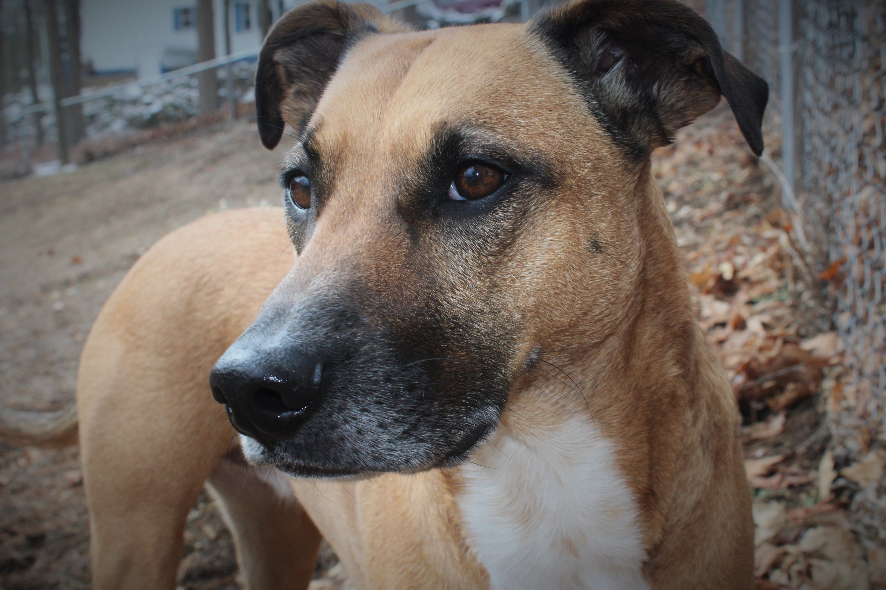
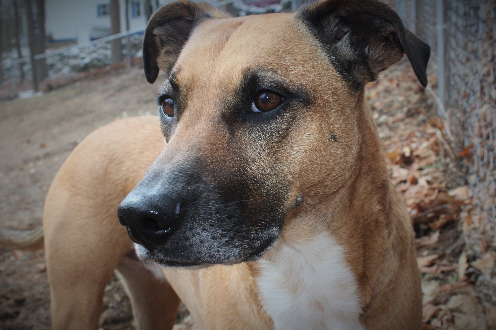
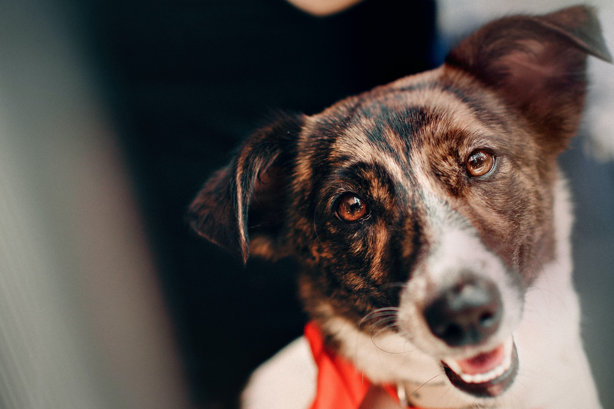
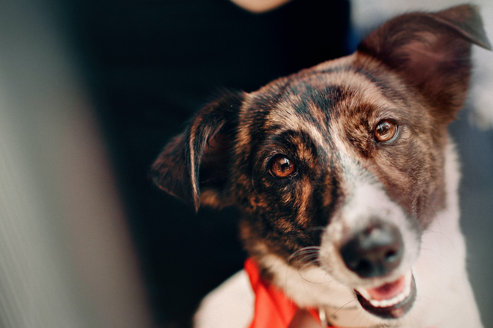

Site Map Content
Topic 1: Credibility
One of the topics I want to put on my site is an 'about us' page. I believe one of the main concerns of the people visiting the website is the intentions of the rescue (whether they're in it for the money or the animals) and how well the dogs are being taken care of. By providing a page that talks about our rescue's mission, goals, and history, we will help site visitors understand that we are a responsible and credible rescue that cares for the well-being of all animals.
Topic 2: Get to know the dogs
After learning more about the rescue, most visitors of the site will want to see and get to know the dogs that are available for adoption. We could have a page showing the pictures of the dogs, with paragraphs next to the pictures describing the dog's personality. Doing this will help people get a better understanding of the dog and whether or not they would be a good fit for their family.
Topic 3: Newsletter
The last topic I would like to put on the website is a newsletter describing upcoming events, ways to contact the shelter including its location, or just sharing cute videos of the dogs. This would more than likely be the home page since it will be a good way to briefly give the visitor an idea of what the shelter is all about.
Possible Website Images
 

 

Site Purpose
I want to create a website that would give information on and promote a fictional dog rescue organization. The website would give information on the dogs that are available for adoption and would encourage people to adopt said dogs. Something unique about the website; you could take a personality quiz to see what kind of dog would be best suited for your needs. It would be an overall fun and interactive experience for everyone who visits the site.
Site Audience
As of now, the target audience will be animal lovers who are looking to adopt a rescue dog.
- Is this rescue organization credible? Do they know what they are doing?
- What makes this rescue different from others I have seen?
- Is the rescue friendly? Would it be easy to adopt from them?
Color Scheme
- I will use blue as the main color, since it is a calming color. hex #0081A7 rgb: 0, 129, 167
- I will use some yellow or golds as accent colors because they are happy/positive colors. hex #222255 rgb: 34 34 85
- I will use light gray or white as background colors.
Site Typography
I will use sans serif for normal text and times new roman for headers